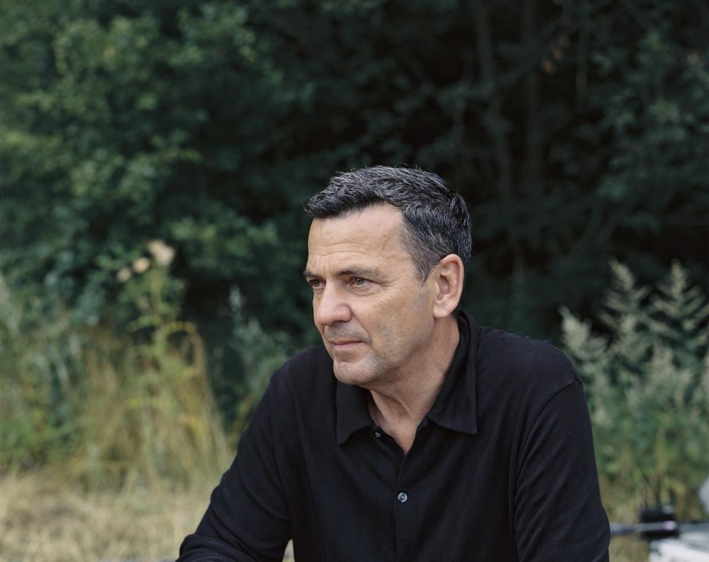
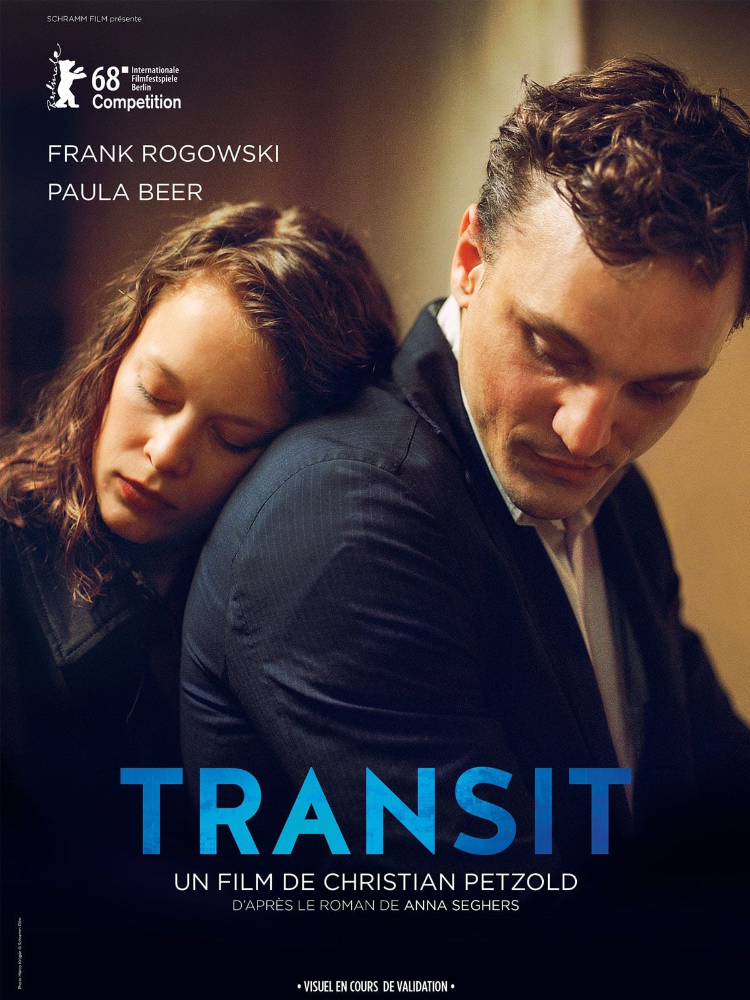

After the museum visit, we went to a nearby ramen restaurant to have dinner before going back to MoMMA for a film screening.
I ordered a salmon don and my friend ordered a tonkotsu ramen.
The salmon was very fresh but it was too salty with the soy sauce.
Transit is a German film about displacement, identity, and memory. It is part of MoMA's screening series Immigrant Nation: People in Transit.

DIRECTOR
Petzold is part of the 21st century Berlin School film movement. His films addresses issues of work and employment, and they also deal with conflicts between life and death.
His other films include Barbara, Phoenix, Undine, and the most recent Miroirs No.3 His cinema plays out on borders, alert to the contested, slippery nature of time, place and identity. Lincoln Center has recently put up a film series by Christian Petzold where the director comes in-person.

The film is based on Anna Segher's 1944 novel of the same name and adapted to be in the present.
The film follows a German political refugee Georg who impersonates a dead writer in an attempt to flee a facist state.
The main theme of the film is identity. The protagonist, Georg, takes on the identity of a famous writer Franz Weidel. The identity of the protagonists in the film are extremely fragile as they rely on immigration documents and passes.
I quiet enjoy the film as the ending also leaves us with unresolved ambiguity. The boundary between truth and performance is constantly blurred in the narrative, and identity is in flux.